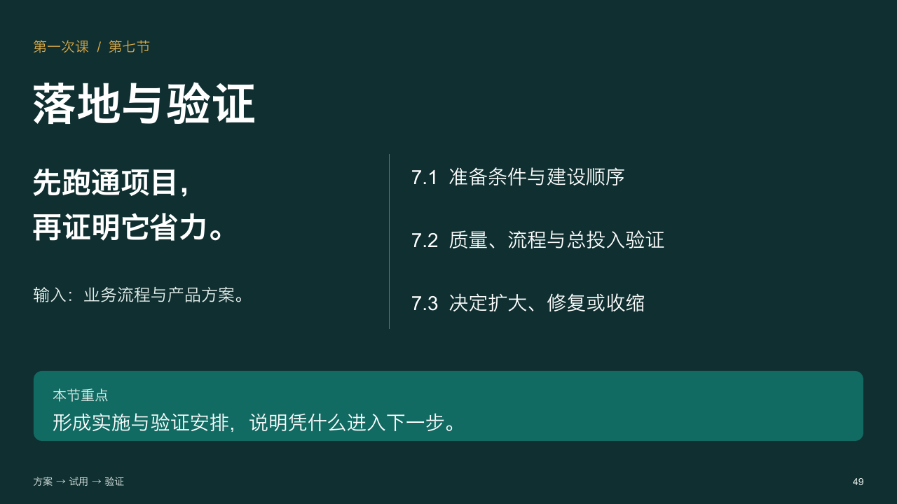
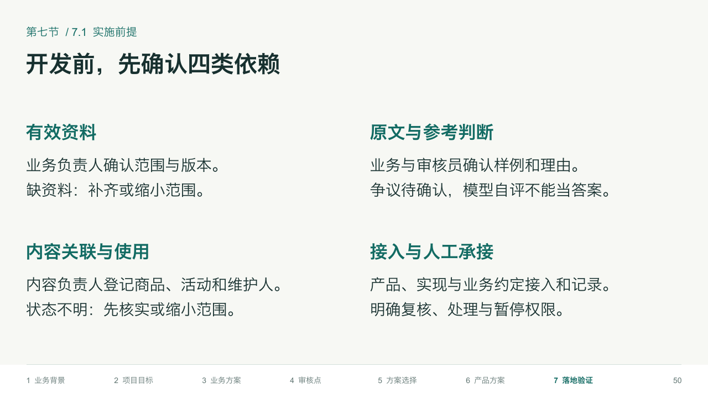
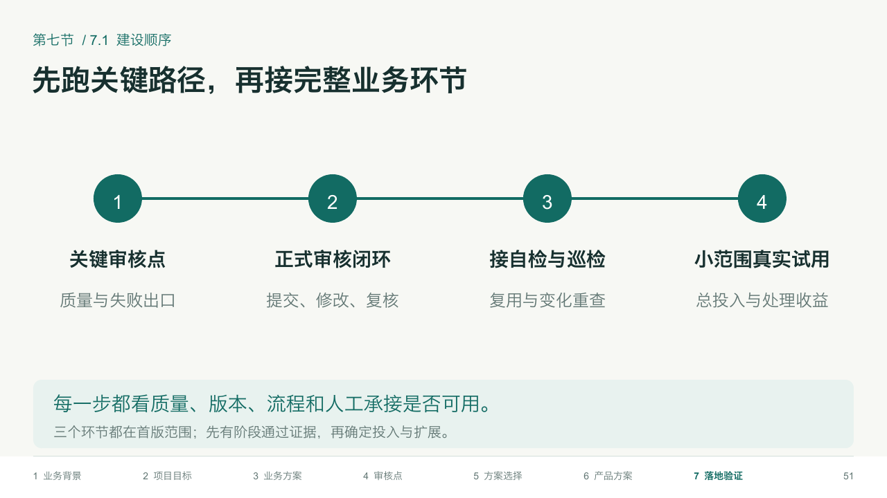
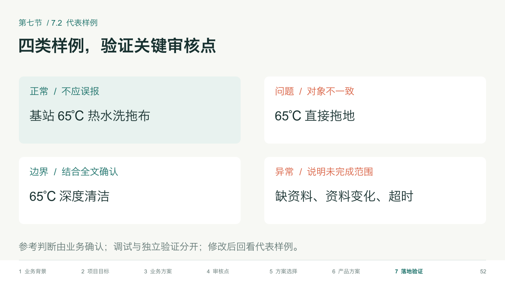
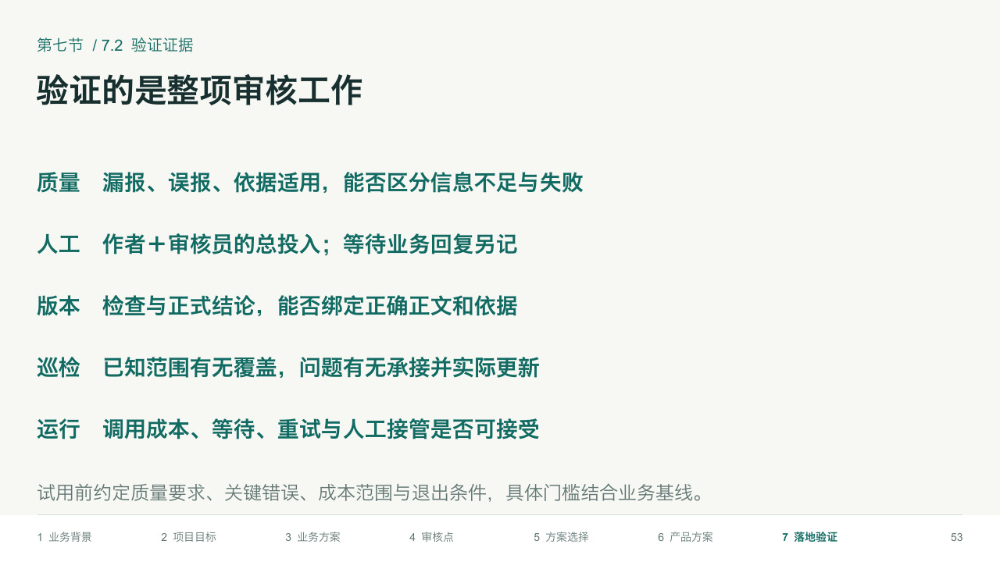
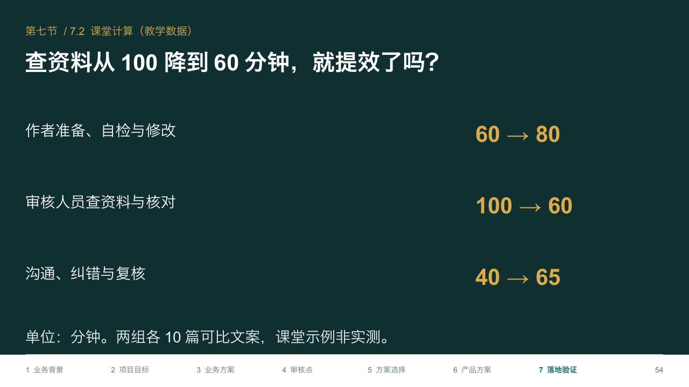
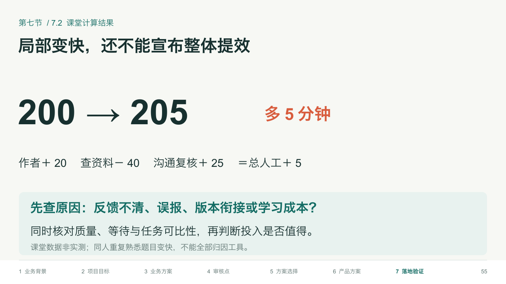
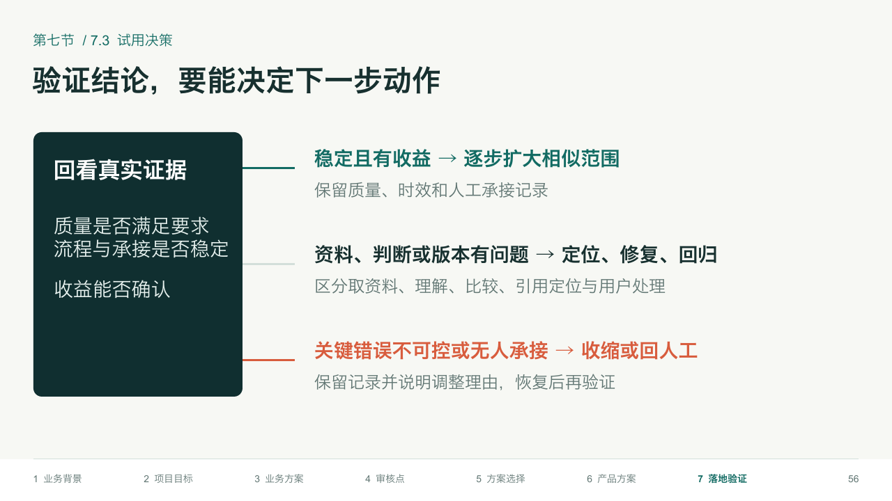
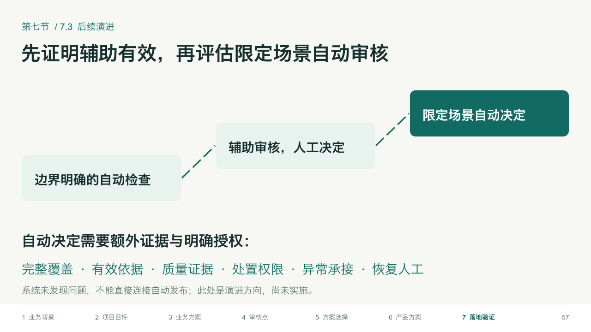
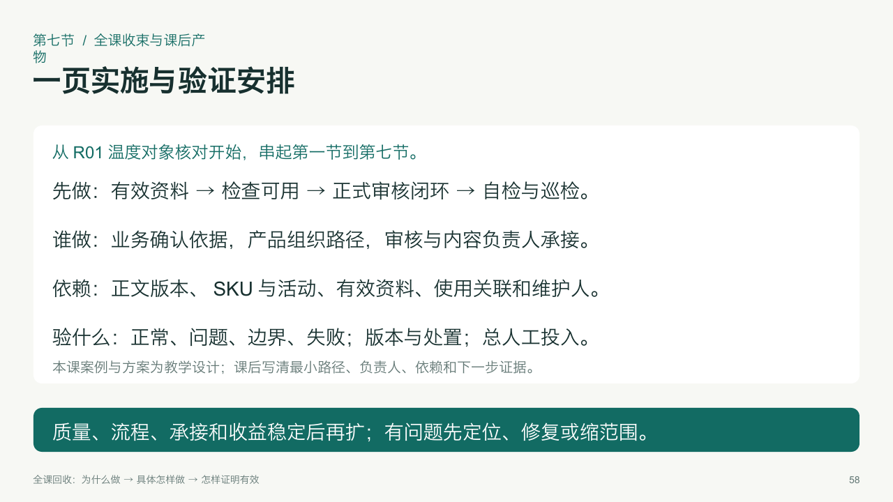

第一次课 · 第七节：落地与验证
确认资料与责任依赖，分步跑通关键路径，以质量、流程、总人工和实际处置验证项目效果，再决定扩大、修复或收缩。 共10页（P49—P58），含章节标题页和逐页教师备注。
P49 · 章节标题
P50 · 实施前提
P51 · 建设顺序
P52 · 代表样例
P53 · 验证证据
P54 · 课堂计算
P55 · 总人工投入
P56 · 试用决策
P57 · 后续演进
P58 · 全课收束
复用结构强化版原生模板。画面由实际PPTX渲染；案例、方案与期望判断为教学推演，尚未实测。讲解细节在教师备注中。